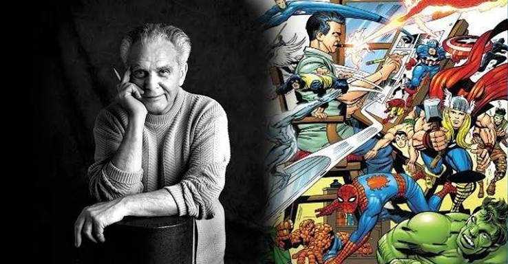

fue un escritor y editor estaudinense cocredor de muchos
personajes de marvel como Spider-Man y los cuatro
fanstasticos.
Jacob Kurtzberg[1] (Manhattan, Nueva York, 28 de agosto de 1917-Thousand Oaks, California,
6 de febrero de 1994), más conocido como Jack Kirby, fue un dibujante, escritor y editor de cómics
estadounidense, ampliamente considerado uno de los principales innovadores del medio y uno de sus creadores
más prolíficos e influyentes. Se crio en Nueva York y aprendió a dibujar personajes de dibujos
animados copiando tiras cómicas y viñetas de periódicos.
